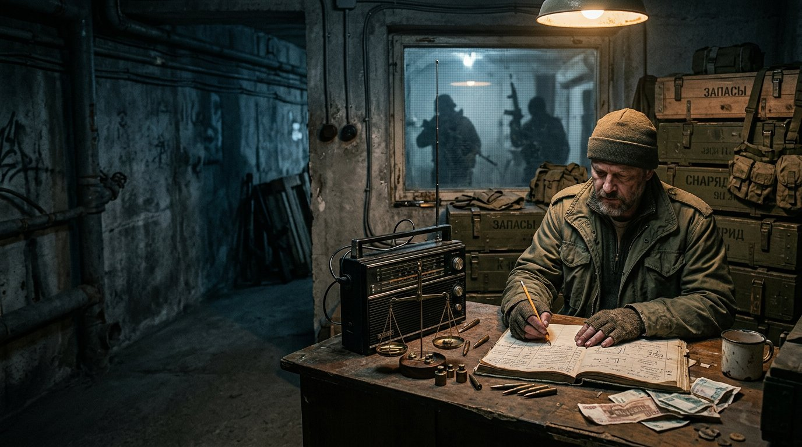

INDEX / COMMERCE & PROGRESSION
Dix profils dédiés, six entrées auxiliaires
L’endpoint regular retourne 16 enregistrements. Les huit traders classiques, Lightkeeper et Ref ont une fiche; les autres sont distingués comme interlocuteurs, services ou lieux.
Les seuils sont des valeurs de catalogue communautaire. Prix, rotations et disponibilité réels ne sont pas un flux live.

01 Profils
Choisir un interlocuteur
Filtrez par spécialité ou type; les services et offres sont à confirmer dans le mode ouvert.
Profil · Armes et logistique
Prapor
Armes, munitions et tâches de progression. Comparez le niveau PMC et la réputation; le volume d’achats n’est plus la condition de loyauté depuis 1.1.0.
Profil · Soins et services médicaux
La Toubib
Soins, assurances, objets médicaux et tâches de collecte. Les tarifs et services varient; vérifiez toujours les valeurs visibles dans le client.
Profil · Équipement et embranchements
Skier
Équipement et tâches pouvant s’inscrire dans des branches ou événements. Distinguez les tâches permanentes des chaînes limitées dans le temps.
Profil · Dollars et équipement occidental
Peacekeeper
Un profil orienté dollars et équipements occidentaux. Les seuils de loyauté ne sont pas des prix de conversion ni un catalogue de stock.
Profil · Modifications et Gunsmith
Le Mécano
Modifications d’armes, réparations et tâches Gunsmith. BSG indique que Weapon Build est accessible sans attendre une amélioration de l’établi.
Profil · Vêtements, portage et protection
Ragman
Vêtements tactiques, sacs, rigs et matériel de protection. Collector réclame Ragman LL4 dans le snapshot communautaire consulté.
Profil · Survie, chasse et services
Jaeger
Tâches de survie et de chasse, équipements spécialisés et services dont les conditions changent selon le mode.
Profil · Scav, réputation et Collector
Fence
Fence relie les activités Scav et la réputation. Collector est aussi une tâche de Fence dans l’export, mais ses conditions de fin de jeu divergent entre sources communautaires.
Profil · Progression narrative et Lighthouse
Lightkeeper
Lightkeeper est un interlocuteur à accès narratif, pas un profil de loyauté classique. L’export ne marque aucune tâche avec lightkeeperRequired; ce zéro ne prouve pas l’absence de contenu lié.
Profil · Arena et offres dédiées
Ref
Ref est lié à EFT: Arena. Les règles de transfert dépendent du mode et de la période; BSG décrit une synchronisation Arena vers PvP Seasonal, pas un transfert général bidirectionnel.
Interlocuteur de l’histoire · entrée amont
Taran
Répertorié dans l’endpoint des traders; ne pas le traiter comme un marchand au stock standard.
Lieu / interface · entrée amont
Station radio
Répertorié dans l’endpoint des traders; ne pas le traiter comme un marchand au stock standard.
Service de terrain · entrée amont
Conducteur du BTR
Répertorié dans l’endpoint des traders; ne pas le traiter comme un marchand au stock standard.
Interlocuteur · entrée amont
M. Kerman
Répertorié dans l’endpoint des traders; ne pas le traiter comme un marchand au stock standard.
Interlocuteur · entrée amont
Voevoda
Répertorié dans l’endpoint des traders; ne pas le traiter comme un marchand au stock standard.
Interlocuteur · entrée amont
Survivor
Répertorié dans l’endpoint des traders; ne pas le traiter comme un marchand au stock standard.
02 Loyauté
Seuils LL2–LL4 et réputation Fence
La table conserve les huit traders classiques et Fence dans une ligne distincte; Lightkeeper et Ref ont des progressions différentes.
| Trader | Loyauté | Niveau PMC | Réputation | Volume |
|---|---|---|---|---|
| Prapor | LL2 | 6 | 0,70 | 0 |
| Prapor | LL3 | 21 | 2,70 | 0 |
| Prapor | LL4 | 36 | 7,90 | 0 |
| La Toubib | LL2 | 5 | 0,60 | 0 |
| La Toubib | LL3 | 18 | 2,10 | 0 |
| La Toubib | LL4 | 37 | 5,80 | 0 |
| Skier | LL2 | 7 | 0,60 | 0 |
| Skier | LL3 | 22 | 2,10 | 0 |
| Skier | LL4 | 38 | 5,80 | 0 |
| Peacekeeper | LL2 | 8 | 0,50 | 0 |
| Peacekeeper | LL3 | 19 | 2,20 | 0 |
| Peacekeeper | LL4 | 37 | 6,00 | 0 |
| Le Mécano | LL2 | 12 | 0,60 | 0 |
| Le Mécano | LL3 | 26 | 2,30 | 0 |
| Le Mécano | LL4 | 40 | 7,60 | 0 |
| Ragman | LL2 | 12 | 0,50 | 0 |
| Ragman | LL3 | 27 | 2,00 | 0 |
| Ragman | LL4 | 42 | 6,50 | 0 |
| Jaeger | LL2 | 9 | 0,60 | 0 |
| Jaeger | LL3 | 17 | 2,10 | 0 |
| Jaeger | LL4 | 33 | 7,30 | 0 |
| Fence | Fence 0 | 1 | 0,00 | 0 |
| Fence | Fence 1 | 1 | 0,00 | 0 |
| Fence | Fence 2 | 1 | 6,00 | 0 |
Les seuils ne prouvent pas le déblocage sur un compte. Depuis 1.1.0, le volume d’achat n’est plus une condition de loyauté.
03 Périmètre
Stock variable et sources séparées
BSG documente les règles générales; Tarkov.dev fournit un export communautaire utile aux seuils, tâches et dépendances. Aucune rotation de stock n’est publiée ici.
À chaque nouvelle loyauté, rouvrez les menus du trader et des tâches dans le profil courant. La mise à jour 1.1.0 a modifié les offres et organisé la majorité des tâches secondaires en groupes de loyauté.
REF Sources
Sources et limites
BSG, exports communautaires et outils restent distingués. Référence 2026-11-18; prix, disponibilité de quête, spawns et progression de compte non testés dans le client.
- primairePatch 1.1.0.0 · notes BSG 3 août 2026 : refonte des tâches par loyauté, retrait du volume d’achat, changement de services, règles Seasonal et synchronisation Arena → PvP Seasonal.
- primairePatch 1.3.0.0 · notes BSG 29 octobre 2026 : événement Halloween, esthétique Hideout et ajustements de compétences; les notes ne donnent pas un ROI de stations.
- donnees_communautairesTarkov.dev · catalogue des endpoints Documente les exports JSON publics et les modes regular, pve et pvp-season. Source communautaire, pas une API officielle BSG.
- donnees_communautairesTarkov.dev · traders Référence communautaire des traders et niveaux; le stock et les prix peuvent changer.
À lire ensuite
Continuer dans Traders
Ouvrir une autre fiche et garder le même mode de référence.